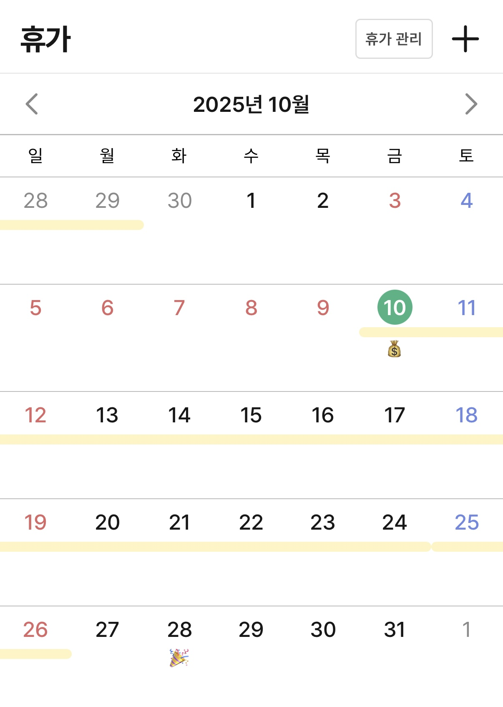
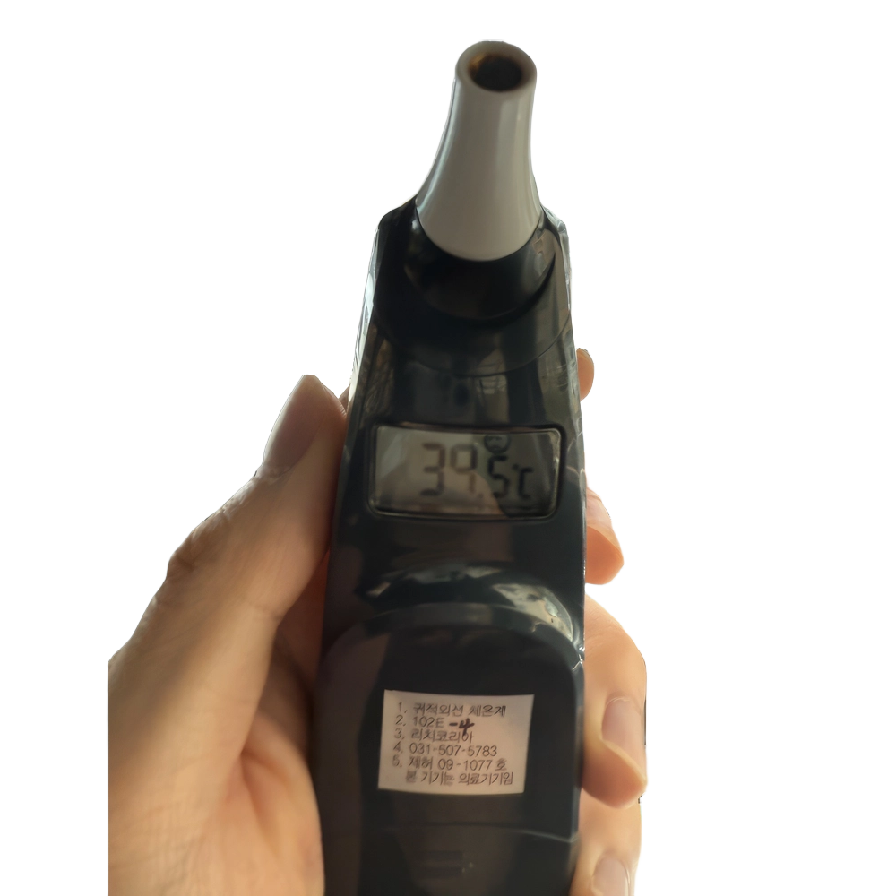
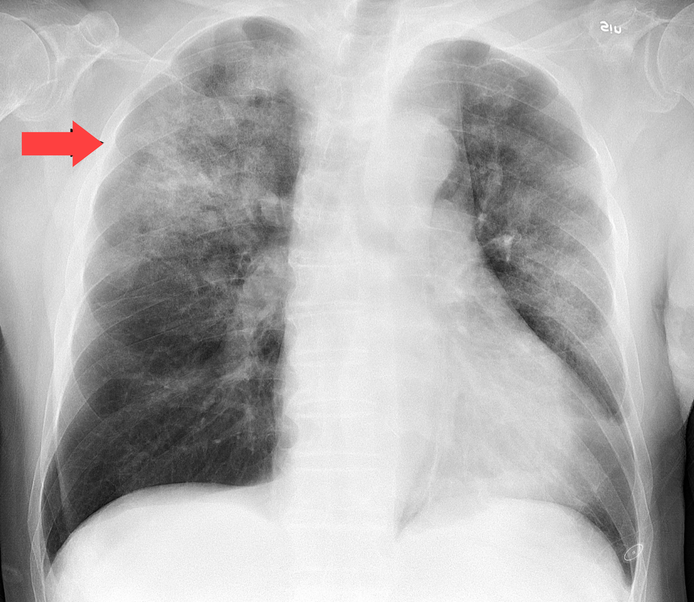
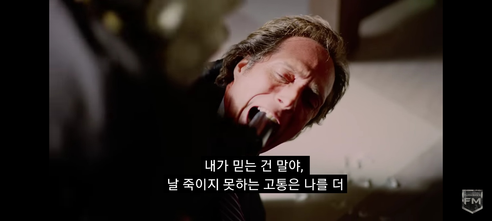

"환자 안상준은(는) 해열진통제를 사용했다!"

별거 아니겠지?
휴가 복귀를 몇일 앞둔 어느 날 저녁, 다시 미열이 올라왔다. 다음 날 아침이 되자 몸이 감당하기 힘들 정도로 뜨거워졌고 결국 병원을 찾았다.
체온은 38도였다. 코로나와 독감 검사를 진행했지만 결과는 모두 음성이었다. 의사는 해열제를 처방하고 하루 정도 더 지켜보자고 했다.

작년 10월 중순, 군 생활을 마무리하는 말년 휴가를 보내고 있었다. 마지막 휴가인만큼 특별한 계획을 세우기보다는 집에서 쉬며 조용히 시간을 보내고 있었다.
하지만 휴가를 보낸 지 3일쯤 지났을 때 몸에 이상이 생기기 시작했다. 단순한 몸살일 것이라 생각했다. 집에 있던 해열진통제를 복용하며 며칠을 버텼다.
휴가 복귀를 몇일 앞둔 어느 날 저녁, 다시 미열이 올라왔다. 다음 날 아침이 되자 몸이 감당하기 힘들 정도로 뜨거워졌고 결국 병원을 찾았다.
체온은 38도였다. 코로나와 독감 검사를 진행했지만 결과는 모두 음성이었다. 의사는 해열제를 처방하고 하루 정도 더 지켜보자고 했다.

하지만 집으로 돌아온 뒤 상황은 더 악화됐다. 온몸이 바르르 떨리고 이가 덜덜거릴 정도로 심한 오한이 찾아왔다. 가을 날씨였지만 내 몸은 마치 한겨울 속에 있는 것처럼 느껴졌다. 결국 버티지 못하고 동네에 있는 작은 종합병원을 찾았다.
그곳에서 체온을 재어보니 39.5도까지 올라 있었다. 다시 코로나와 독감 검사를 진행했지만 결과는 여전히 음성이었다. 원인을 고민하던 의사는 뇌수막염 가능성을 언급했고, MRI를 포함한 여러 검사를 진행한 끝에 나는 7일 입원 판정을 받게 되었다. 전역이 불과 5일 남은 상황에서의 입원이었다.
다음 날 뇌척수액 검사가 진행됐다. 척추 사이로 긴 바늘을 넣어 척수액을 채취하는 검사였다. 하지만 20번의 바늘이 내 척추 사이를 비집고 나서야 검사는 실패로 끝났고 의사는 뇌수막염 가능성을 염두에 두고 치료를 이어갔다. 의사의 행동이 신뢰가 가지 않았다. 다행히 이틀이 지나자 고열은 조금씩 가라앉기 시작했다. 나는 더 이상 병원에 머물고 싶지 않아 “죽어도 난 몰라요.” 라는 의사의 망언을 뒤로 한 채 자진퇴원을 선택했다.
이후 전역 전날 부대로 복귀했다. 함께 생활했던 동기들과 후임들에게 인사를 나누고 마지막 시간을 보내고 싶었기 때문이다. 그렇게 오랫동안 기다려 왔던 전역의 순간을 맞이했지만, 몸 상태 때문인지 기대했던 것만큼 실감이 나지는 않았다. 담담하게 부대와 마지막 인사를 나누고 서울로 돌아왔다.

하지만 집으로 돌아가는 길에도 미열이 다시 올라오기 시작했다. 정확한 병명을 찾기 위해 대학병원을 찾았고 가슴과 복부 CT를 찍기로 했다. 하지만 대학병원이라서 CT 촬영만 2주 넘게 기다려야했다. 결국 또 다른 병원에서 CT 촬영을 진행했고 검사에서 원인이 밝혀졌다.
뜻밖에도 폐렴이었다. 기침이나 가래 같은 전형적인 증상이 없어 전혀 예상하지 못했던 결과였다. 다행히 항생제를 복용하자 며칠 만에 열은 깨끗하게 사라졌다.
그러나 처음부터 계속되던 어지러움은 여전히 남아 있었다. 일상생활을 하기 힘들 정도로 지속되던 어지러움 때문에 또 다른 병원을 찾았다. 여러 검사 끝에 편두통성 어지럼증이라는 진단을 받았다. 오랜 기간 몸이 아프면서 면역이 약해지고 극심한 스트레스를 받자 뇌가 과민 반응을 일으킨 것이라는 설명이었다.
이후 한 달 동안 약을 복용했지만 차도가 없어 안과에도 가보고 MRI, 뇌척수액 검사 등을 다시 진행했다. 모두 성공적으로 검사를 진행했고 다행히 추가적인 이상소견은 없었다. 병원에서 좀 더 독한 약을 처방 받아 복용하며 집에서 휴식을 취했고, 처음 아프고 나서 두 달이 가까워질 무렵에서야 비로소 일상으로 돌아올 수 있었다.

살면서 이렇게 아픈 적은 처음이었다. 이렇게 아프니까 욕심이고 뭐고 다 없어지고 건강만 되찾으면 좋겠다는 마음이었다. 여러분들도 행복하게, 잘 살고 싶으면 건강부터 챙기시길... 과제보다 돈보다 건강이 우선입니다!